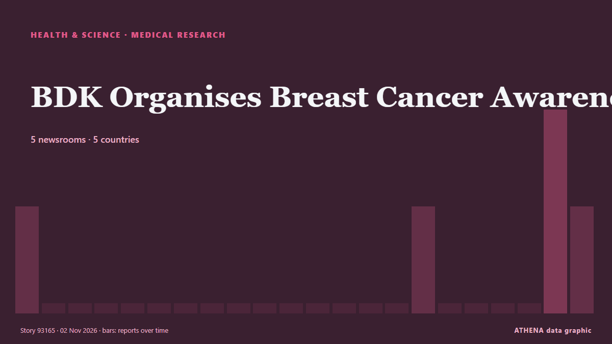

Salud, ciencia e investigación
Los titulares se muestran en inglés, tal como se publicaron.

Investigación médicaBDK Organises Breast Cancer Awareness
Free Health Screenings Held for Attendees in Salmabad. de News of Bahrain
| 20 oct | 19 |
|---|---|
| 21 oct | 40 |
| 22 oct | 81 |
| 23 oct | 76 |
| 24 oct | 36 |
| 25 oct | 45 |
| 26 oct | 83 |
| 27 oct | 80 |
| 28 oct | 79 |
| 29 oct | 90 |
| 30 oct | 80 |
| 31 oct | 39 |
| 1 nov | 23 |
| 2 nov | 10 |
Nigeria identifies 2 suspected Ebola cases in North-East says NCDC
The Nigeria Centre for Disease Control and Prevention, however, says that confirmation is subject to laboratory results. de Channels TV
More than 5,000 die from Ebola in DR Congo’s deadliest outbreak
Government data shows that more than 10,000 people have contracted the rare virus. de BBC News
More than 1,500 people awaiting organ donation in Azerbaijan
Thessaloniki's George Papanikolaou Hospital ranks first in Northern Greece for organ donation as doctors highlight the process and its life-saving impact. de Greek City Times
Decades-old NASA telescope heading back to Earth — to crash
The Neil Gehrels Swift Observatory, which launched in 2004, is expected to come crashing down to Earth soon. de The Independent
Latvia to chair UN Security Council for first time in its history
Latvia will assume the rotating presidency of the United Nations Security Council for the first time in its history on November 1, serving in the role for one month, the country’s Foreign Ministry… de AzerNews
California doctor gets 15 years for $45m Medicare fraud using fake Botox claims
California doctor Violetta Mailyan has been sentenced to 15 years in federal prison for defrauding Medicare of more than $45 million through fake Botox injection claims. de Times of India
23:28 How Belarus hosted Oleshky evacuees: the humanitarian mission in detail Society
Preparations for the humanitarian mission to Oleshky are nearing completion: the designated routes have been cleared of mines, and the humanitarian convoy has been assembled and is ready to depart. de Ukrinform (English)
Dubai announces major new research and AI campus in Zabeel Park for 30,000 innovators
Dubai announces Nad Zabeel, a major research and AI campus in Zabeel Park, expected to attract over 30,000 participants annually to its programmes and events. de Arabian Business
Rajyotsava celebrated in Raichur
Minister recalls the century-long struggle to bring Kannada-speaking regions under a unified State. de The Hindu
Chong Wei: Making tough decisions for Malaysian badminton comes with criticism
KUALA LUMPUR: Former world number one Lee Chong Wei is prepared to face public criticism as he navigates the challenges of driving change in Malaysian badminton, insisting that difficult decisions… de New Straits Times
It's ACA open enrollment time. Here are the changes for health insurance shoppers
The ACA health insurance marketplaces — find yours at HealthCare.gov — open Nov. de NPR
US inmate Christa Pike says she woke up 'confused and in pain' after failed execution
It is Pike's first public statement since she survived an execution attempt by lethal injection in September. de BBC News
Halloween chaos in Lancashire as three children arrested and one in hospital after illegal party
Over 200 children attended the party in Lancashire. de Manchester Evening News
Africa CDC Commits $1.5mn to Support Kenya’s Ebola Response
The commitment follows a meeting between Health Cabinet Secretary Aden Duale and Africa CDC Director-General Jean Kaseya in Nairobi, where Duale briefed the continental health agency on measures… de Capital FM Kenya
Mata Ayer assemblyman Wan Badariah dies at 50
KANGAR: Mata Ayer assemblyman Wan Badariah Wan Saad has died. de New Straits Times
Rare 4.1-billion-year-old Martian meteorite reveals clues to planet's ancient past
Scientists at the University of New Mexico have played a key role in identifying a rare, 4.1-billion-year-old Martian meteorite that provides new evidence that the red planet may have once had a… de Phys.org
South Africa beat Australia by 176 runs in third Test to win series
Join IOL Sport for comprehensive live coverage of the decisive third Test from Cape Town. de IOL
Three ONYX Hotels Win Green Tourism Awards, Bringing “ONYX for Planet” to Life in Chonburi
Amari Pattaya, OZO North Pattaya and Amari Bangsaen recognised for integrating responsible operations, local engagement and measurable sustainability outcomes BANGKOK, THAILAND – Media OutReach… de Laotian Times
Saudi Arabia suspends travel to Kenya, bans visas and entry over Ebola concerns
Riyadh: Saudi Arabia has suspended travel by its citizens to Kenya, halted the issuance of all types of visas to travellers arriving from the country and banned their entry into the Kingdom as part… de Gulf News
Asanko Gold organises health screening for residents in host communities
Over 300 residents of Asanko Gold Ghana Ltd’s host communities received free health screening as part of the company’s Cancer Awareness Month activities. de MyJoyOnline
Australia hammered by Harmer in Cape Town as South Africa take series 2-1
Chasing a target of 288, Australia were bowled out for 111 in the second session on the final day. de Times of India
ED arrests four more accused, including Myanmar national, in cross-border drug network
Chintuang was a Myanmar-based supplier of the 49.1 kg methamphetamine consignment seized in August 2025, while Lalrammuana was the main handler and Jabrul Haque its intended receiver at… de The Hindu
MBA student dies after jumping from Jaipur’s Poornima University building
The student, identified as a resident of Prem Nagar in Jaipur's Gurjar Ki Thadi area, was pursuing her second year of MBA. de Hindustan Times
Humanitarian mission from Oleshky arrives in Ukraine
A Ukrainian delegation that carried out a humanitarian mission to the temporarily occupied city of Oleshky, Kherson region, has returned to Ukrainian government-controlled territory. de Ukrinform (English)
SWAG joins breast cancer awareness campaign with free screening at UniMAC-IFT
By Tilda Acorlor More than 40 students and staff have undergone free breast cancer screening at the University of Media, Arts and Communication–Institute of Film and Television (UniMAC-IFT) as the… de GBC Ghana Online
Possible new dwarf planet identified orbiting beyond Pluto
WASHINGTON, Oct 28 - Scientists using a Chile-based telescope have identified an icy object orbiting beyond Pluto that may join our solar system's small roster of dwarf planets. de The Straits Times
Man (65) charged with attempted murder of doctor stabbed in Dublin medical unit
He appeared before Judge Michele Finan at Dublin District Court on Saturday morning. de Irish Independent
Part of London's Oxford Street pedestrianised 'forever'
A stretch of London's iconic Oxford Street was made traffic-free "forever" from Monday, as pedestrians took over the country's most famous shopping street, absent of the capital's... de Oman Observer
An AI Agent Injected Drugs Into a Live Mouse’s Brain
A biotech startup let an agent choose a gene therapy and successfully inject the treatment, offering a startling glimpse of the future of research labs. de Wired
Sarawak doubles Unimas medical intake to produce more local doctors
KUCHING: Sarawak will double the intake of new medical students at Universiti Malaysia Sarawak (UNIMAS) from 40 to 80 as part of efforts to produce more local doctors and address the state's shortage… de New Straits Times
Firework warning as data shows rise in number of people admitted to hospital
NHS England said there were 85 firework-related hospital admissions in England last November, up from 60 the year before. de Evening Standard (London)
China grants 30 mln USD to support small-scale development project in Nigeria
FG, China sign $30m grant for development projects By Nana Musa The Federal Government has signed a 30-million-dollar grant agreement with China to support small-scale development projects across… de News Agency of Nigeria
DR Congo: MSF celebrates Ebola patient discharges in Ituri province
Dancing and singing erupted at an Ebola treatment centre in DR Congo as the last patients were discharged. de Euronews English